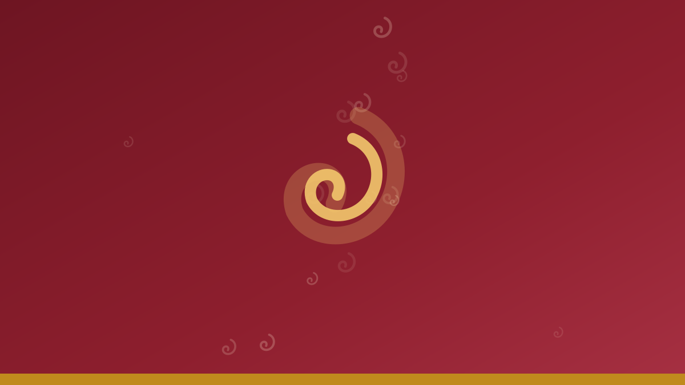
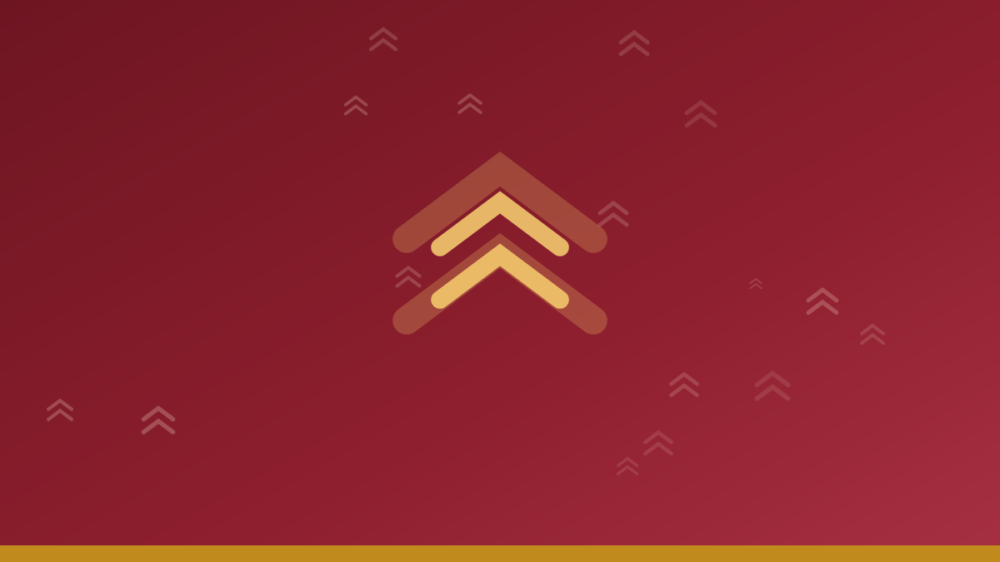
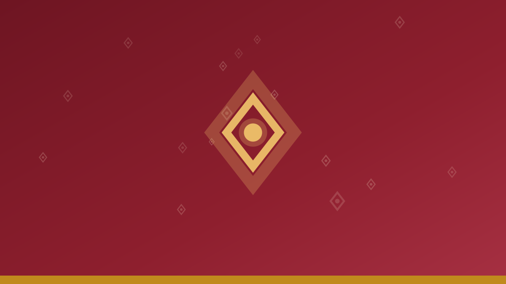

Kirasfistan Nedir? Parçaları, Yöreye Göre Farkları ve Seçim Rehberi
Kiras, fistan ve şûtik parçalarıyla kirasfistanı tanıyın; kumaş türleri, yöresel farklar ve seçim tavsiyeleri bu rehberde.
Kirasfistandan puşiye, Kürt kıyafet kültürünün hikâyesi, bakım önerileri ve stil rehberleri.

Kiras, fistan ve şûtik parçalarıyla kirasfistanı tanıyın; kumaş türleri, yöresel farklar ve seçim tavsiyeleri bu rehberde.
Kına, nişan ve düğün için kirasfistan seçimi, erkeklere şal û şepik ve puşi kombini, halaya uygun kumaş önerileri.

Şepik, şal ve şûtikten oluşan geleneksel Kürt erkek takımı: kumaşı, renkleri, kombin ve bakım önerileriyle kapsamlı rehber.

Omuz atmadan baş sarmaya, en çok kullanılan 5 puşi bağlama stilini adım adım öğrenin; renk ve kombin önerileriyle.